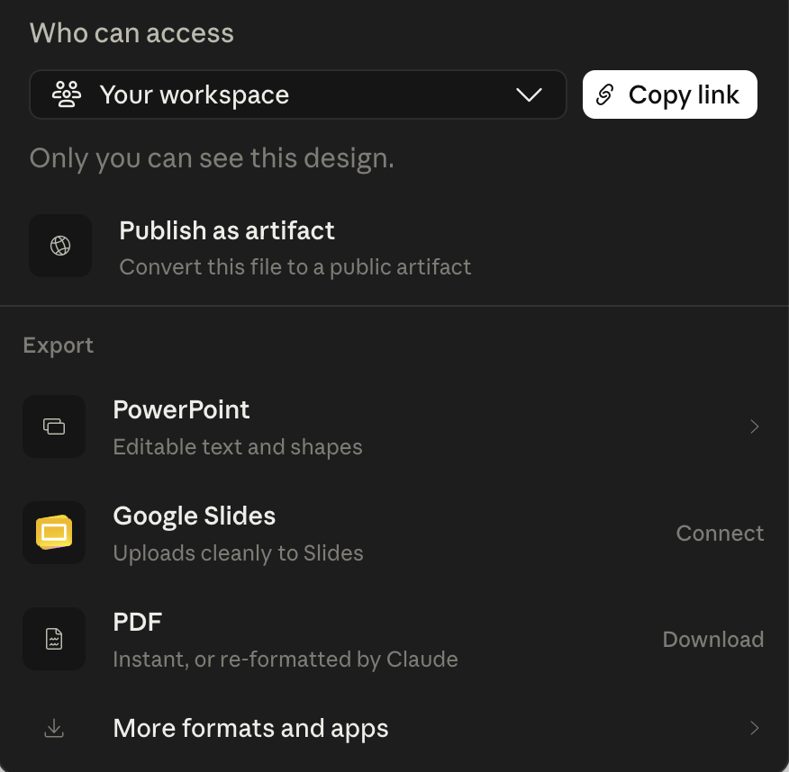
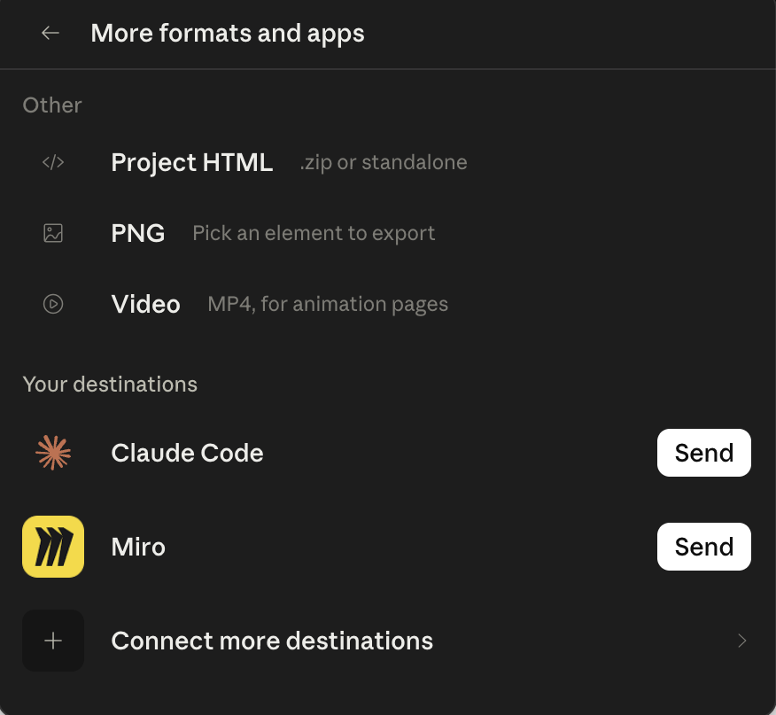
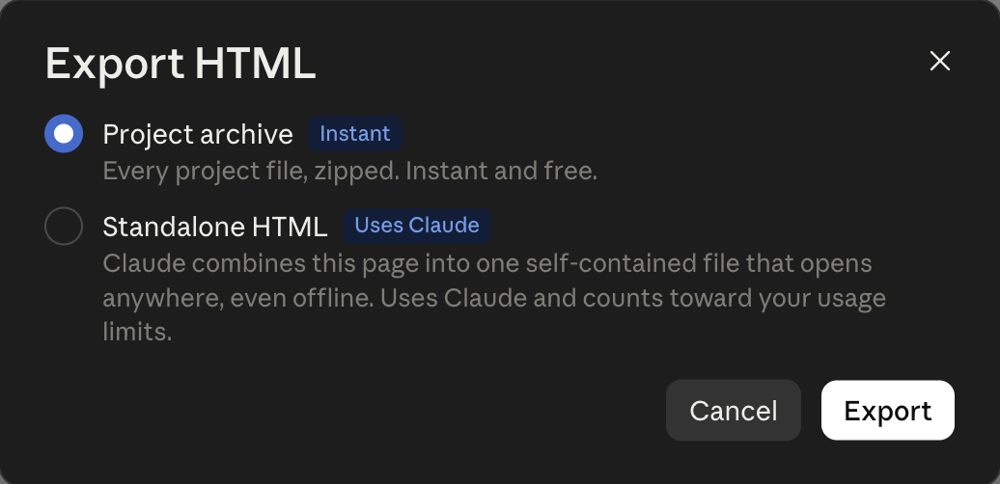
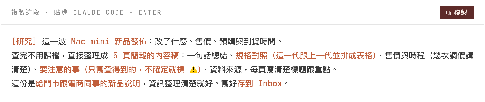
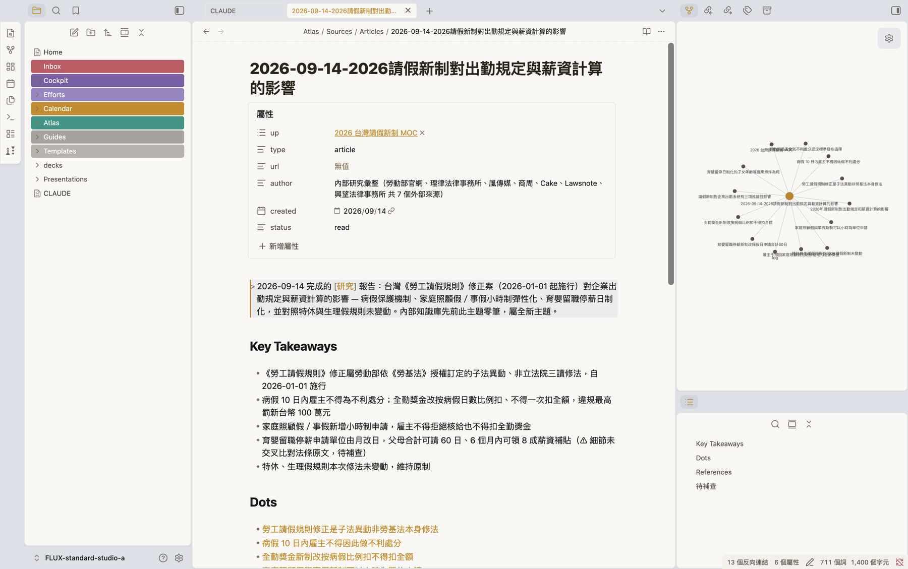
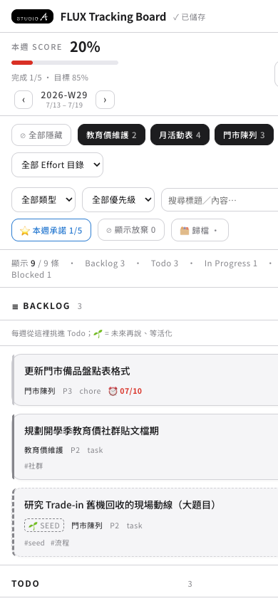

STUDIO A. ／ C 組 · D2
2026 / 09 / 14人資部 ＋ 財會部 · 13 人 · 下午半天
把做法包起來，
把任務放上板。
把任務放上板。
下午兩件事：做一個你自己的 skill · 一塊自己做的任務板 —— 做完，一句話就跑、任務都在板上看。
講師 余文皓
匯流顧問有限公司
2026 / 09 / 14
STUDIO A · C 組 · 2026/09/14
上週回顧9/11 · 第一天在做什麼
上週做的事：建一個跟 AI 一起工作的環境。
① 建環境
AI 工作環境
住在你自己的電腦裡 —— 它讀得到你的檔案，也記得你是誰。
→
② 放進工作檔案
你手上工作的 Efforts
出勤、教育價、請款 —— 每件工作一個資料夾，它讀得到。
③ 讓 AI 幫你做這四件事
整理數據
訂單表對規則清單，它逐筆過，Pass 跟 Fail 分好給你。
回 email
讀你的信，把要寄給門市的通知信先草擬好。
行事曆
查你的行程，一句話建好今天這堂課的行程。
投影片
內容你出、版面它排，生出來就是 STUDIO A 的樣子。
重點不是哪一招 —— 是檔案放在它讀得到的地方，它才幫得上忙。
STUDIO A · C 組 · 2026/09/14
今天 · 9/14下午兩件事
今天兩件事 —— 教 AI 一次就會，
再做一塊自己的任務板放上雲端。
再做一塊自己的任務板放上雲端。
上半場 · Skill
教一次，之後每次做得一樣好
同一件事，每次都要重新交代一大段？
把做法包成 skill —— 喊一句就跑，每次做出來都一樣穩。
把做法包成 skill —— 喊一句就跑，每次做出來都一樣穩。
今天做
1
把開工、收工、結算包成 skill
2
從白紙做一個你自己工作的 skill
下半場 · Vibe Coding
不寫程式，也做得出自己的工具
Vibe Coding：你用講的說要什麼，
Claude 寫程式，你看成品驗收。
Claude 寫程式，你看成品驗收。
今天做
1
開門：申請 Cloudflare 雲端帳號
2
部署：把你的任務板放上雲端
3
接管：任務搬上板，開工收工都改讀板
4
加功能：自己幫任務板加功能
5
時光機：改壞也不怕，倒回上一個版本
兩樣都不用寫程式 —— 一樣是你講、Claude 做、你驗收。
STUDIO A · C 組 · 2026/09/14
補上週 · 簡報收尾先看整條路
上週生好的簡報 —— 交出去的整條路。
轉出第一份 index.html —— 以後的簡報，Claude Code 照它做，不用再回 Design。
補上週 · 整條路
補上週 · 帶回家Export HTML · 三步
帶回家 —— 匯出原始檔。
1
右上 Share → 最下面 More formats and apps

2
點 Project HTML

3
選 Project archive → Export

為什麼選 Project archive拿到的是原始檔，像 Word 原檔 —— 之後改字、換圖都快。下面的 Standalone 像 PDF：雙擊就能看，但改一句要等好幾分鐘。
補上週 · 帶回家
補上週 · 轉一次下載工具箱 · 一句話 · 8 MIN
原始檔拿回來 —— 再轉一次，以後就開 index.html。
剛匯出、還沒轉 · 資料夾裡是 .dc.html
直接雙擊 —— 只看到一長條、不能翻頁。它要靠 Design 的程式邊連網邊組畫面，上週就卡在這。
用工具箱轉一次之後
資料夾裡多一個 index.html —— 雙擊就開、沒網路也行，改一句、放張圖一兩分鐘內就好。
工具箱是什麼翻頁程式＋中文字型＋一份給 Claude 讀的做法 —— 讓簡報不靠 Design 也能自己播。你現在看的這份投影片，翻頁用的就是同一支程式。
↓STUDIO_A_deck-kit.zip工具箱DOWNLOAD →
下載完 · 複製 · 貼進 Claude Code
我剛從 Claude Design 匯出了簡報的 Project archive，也下載了
幫我把 Project archive 解壓，整個資料夾搬進 Efforts 裡適合的專案資料夾（不確定放哪就先問我）。
再解壓工具箱，讀裡面的 轉離線版.md，照著把簡報轉好。轉完直接幫我打開 index.html。
STUDIO_A_deck-kit.zip，兩個都在 Downloads。幫我把 Project archive 解壓，整個資料夾搬進 Efforts 裡適合的專案資料夾（不確定放哪就先問我）。
再解壓工具箱，讀裡面的 轉離線版.md，照著把簡報轉好。轉完直接幫我打開 index.html。
驗收 · 你自己看① 多了 index.html
② 雙擊它能翻頁
③ 關 Wi-Fi 還看得到
② 雙擊它能翻頁
③ 關 Wi-Fi 還看得到
有了第一份 index.html —— 下一份簡報請 Claude Code 照它做，不用再回 Design。
補上週 · 轉一次
建立 Skill你一直在用一個東西
上週打的 [研究] ——
它到底是什麼？
它到底是什麼？
上週 · 生簡報那一頁 · 你貼過這一段

先別急著回答 —— 今天先完整跑一次，跑完再揭曉。
上半場 · 建立 Skill
建立 Skill · 暗號兩個暗號
上週打的 [研究]，還有一個搭檔 —— [歸檔]。
[研究] 主題 · 上週你做過
[研究]
先查你自己存過的 →
再上網補 → 整理成一份報告。
再上網補 → 整理成一份報告。
報告先放 Inbox —— 暫存區，
等你決定要不要留。
等你決定要不要留。
[歸檔] 內容 · 等下就試
[歸檔]
把報告、文章、會議紀錄
拆成一張張知識卡片，存進 Atlas。
拆成一張張知識卡片，存進 Atlas。
Inbox 會清空、專案會結案 ——
只有 Atlas 是永久的。
下次研究，它先翻這裡。
只有 Atlas 是永久的。
下次研究，它先翻這裡。
接下來兩頁完整跑一次 —— 先[研究]一個題目，再把報告[歸檔]。
建立 Skill · 兩個暗號
建立 Skill · 動手完整跑一次 · ① [研究]
先 [研究] —— 2026 年的請假新制。
複製 · 貼進 Claude Code · Enter
[研究] 2026 年請假新制 —— 對出勤規定和薪資計算的影響。
報告直接存到 Inbox。
報告直接存到 Inbox。
按下 Enter 之後 · 它會做這三件事
1
先翻你自己存過的，
看以前查過沒有
看以前查過沒有
2
再上網查，補上還不知道的
3
整理成一份報告，存進 Inbox
這個題目今年 1 月才上路 —— 人資要改出勤規定，財會要改全勤獎金怎麼算。
建立 Skill · 動手 [研究]
建立 Skill · 動手完整跑一次 · ② [歸檔] · 5 MIN
再把剛剛的報告 [歸檔]。
① 複製 · 貼進 Claude Code · Enter
[歸檔] 剛剛存到 Inbox 的那份 2026 請假新制報告
②
跑完 → 打開 Obsidian 看一眼
左邊點開 Atlas，看多了什麼 —— 挑一張卡點開。
跑完 · 在 Obsidian 長這樣

歸檔完：拆成好幾張卡，右上角那張小網是它們互相連起來的樣子。
一份報告進去 —— 變成幾張互相連起來的卡，下次 [研究] 它先翻這裡。
05:00
建立 Skill · 動手 [歸檔]
建立 Skill揭曉
剛剛你只打了兩句話，
它跑完了一整串。
它跑完了一整串。
查資料、寫報告、拆成卡、連起來 —— 每一步早就寫好了，
寫在一個叫 knowledge-keeper 的 skill 裡。
你不用記名字 —— 打暗號，它自己就來。
讀信、查行程也一樣，背後都是 skill。
寫在一個叫 knowledge-keeper 的 skill 裡。
你不用記名字 —— 打暗號，它自己就來。
讀信、查行程也一樣，背後都是 skill。
下一頁 · skill 到底是什麼
建立 Skill · 是什麼教一次、多一個員工
Skill ＝ 把一整套做法，「教」給 Claude 一次。
Claude 本身
剛到職的工讀生
通用助手 —— 什麼都會一點，
但不知道你們公司怎麼做事。
但不知道你們公司怎麼做事。
能力不差，但規矩要一條條教、每次重講。
裝上 skill
待了三年的老手
把「你的流程、標準、偏好」
教進去 —— 它就照你的方式做。
教進去 —— 它就照你的方式做。
你說一句，他知道整套怎麼跑。
幫 Claude 裝一個 skill ＝ 多一個資深員工。knowledge-keeper ＝ 你的研究員 —— 等一下，你會自己做出好幾個。
建立 Skill · 是什麼
建立 Skill先問一句
需要會寫程式，
才能建立 Skill 嗎？
才能建立 Skill 嗎？
不用。SKILL.md 就是一個純文字檔 —— 你用中文把規矩寫清楚，Claude 自己照著做。
往下看 · 長什麼樣
建立 Skill · 結構就是一個資料夾
一個 skill —— 就是一個 資料夾。
你的 vault/ └─ .claude/skills/ └─ 你的 skill/ ├─ SKILL.md ← 主要指令（必要） ├─ scripts/ ← 可執行的腳本（選用） ├─ references/ ← 參考文件（選用） └─ assets/ ← 範本（選用）
這是 Claude 的標準 skill 結構：SKILL.md 必要，其他三個要用才加。上週的 knowledge-keeper 就是一個。
最少 —— 一個檔就是 skill
只有
SKILL.md 必要，其他都是要用才加的選配。很多 skill 就這一個檔。就是一個資料夾
整包複製、壓縮就能分享 —— 丟進
.claude/skills/ 就生效。建立 Skill · 結構
建立 Skill · SKILL.md封面 + 你的 SOP
打開 SKILL.md —— 上面封面、下面 SOP。
.claude/skills/knowledge-keeper/SKILL.md · 你電腦裡就有 · 節錄
--- name: knowledge-keeper description: 知識庫助手。兩個暗號： [研究] 收集網路資料、 [歸檔] 拆成可複用的知識卡片。 當使用者說「[研究] XXX」…時使用。 --- # 知識庫助手 ## 這個 skill 幫你做什麼 [研究] 先查知識庫 → 再上網補 → 整合報告 [歸檔] 拆成卡片 → 存進 Atlas
封面（兩條 --- 之間）
name ＋ 觸發語 —— Claude 靠這段判斷要不要啟動（就是 [研究]／[歸檔] 兩個暗號）。
本體（下面那一大段）
就是你的 SOP —— 規則 ＋ 一步步的流程。
全部是中文 —— 你看得懂的字，它就照著做。
上面封面、下面 SOP —— 你看得懂，就寫得出。
建立 Skill · SKILL.md
建立 Skill · 為什麼值得一次寫好、天天省
為什麼值得做成 skill？
對你 —— 事情做得穩、做得快
穩品質
今天這樣講、明天那樣講，做法就跑掉。寫成 skill ＝ 標準 SOP ＋ 產出範本 —— 流程同一套、格式同一份。
省力
不用每次重講背景 —— 一句話觸發，一次寫好、天天省。
對它 —— 腦袋不塞爆
省 context（token）
CLAUDE.md 每次全部讀；skill 平常只讀封面，用到才載入完整內容 —— 不塞爆 Claude 的工作記憶。
顧注意力
塞越多、它越抓不住重點 —— 省下來，注意力留給當下這件事。
一次寫好 —— 穩品質、省力、省 context、又顧注意力。
建立 Skill · 為什麼值得
建立 Skill · 解構開工 對照 真 skill
「開工」對照真 skill —— 同一個形狀。
剛剛看過 knowledge-keeper 的 SKILL.md。把你上週跑過的「開工」擺旁邊看 —— 一模一樣。
✓ 已經是 skill · 住在 .claude/skills/
knowledge-keeper/SKILL.md --- name: knowledge-keeper 觸發語：[研究] ／ [歸檔] --- ## [研究] 1. 先查你存過的 2. 再上網補 3. 整合成報告 4. 進 Inbox
還不是 skill · 還住在 CLAUDE.md
CLAUDE.md —— ## 開工 這段 ## 開工 觸發語：「開工」「規劃今天」「早安」 ### 流程 1. 確認日期 ＋ 檢查 git 2. 回顧最近 daily、盤點待辦 3. 掃 Efforts ／ Inbox 可做的事 4. 討論後建立 Daily Note
兩邊都是觸發語 ＋ 步驟 —— 差別只在住哪。把開工搬進 skills/，就是真 skill。
建立 Skill · 解構
建立 Skill · 動手打開你的 CLAUDE.md · 3 MIN
換你 —— 打開你自己的 CLAUDE.md。
1
檔案列表最上層 —— 點開 CLAUDE.md
上週讀過的那份說明書 —— 它每次上工前讀的就是這份。
2
往下捲，找到 ## 開工 那段
觸發語＋流程 —— 跟剛剛投影的一模一樣，真身就在你電腦裡。
3
再看看還住著誰
## 收工、## WAM —— 上週講過的收工跟結算本週，都住在這。
邊翻邊勾 —— 三個都找到了嗎
☐ ## 開工 —— 每天早上跑的那段
☐ ## 收工 —— 每天收尾的那段
☐ ## WAM —— 每週結算的那段
每個人的檔案不完全一樣 —— 三段都在就好。
三段都擠在同一份檔案裡 —— 接下來，把它們一個個搬家。
03:00
建立 Skill · 動手
建立 Skill · 抽三個同一招 · 抽 3 個
開工、收工、結算 —— 都還在 CLAUDE.md。
現在，全抽成 skill。
現在，全抽成 skill。
同一招 —— 抽 3 個。一段 prompt 照貼，Claude 幫你搬。
建立 Skill · 抽出來
建立 Skill · 升級開工變 skill · 還加料
升級開工 —— 變 skill、還加料。
上週 · 你打「開工」
開工
照 CLAUDE.md 寫的步驟，
幫你盤點任務。
幫你盤點任務。
只做一件事。
→
升級後 · 喊「開工」「早安」都行
daily skill
1
過去 24 小時的信，挑出要回的
2
今天＋明天的行程
3
盤點任務
每件事再標一個顏色：
🟢 它直接做 · 🟡 你拍板 · 🔴 你自己做
🟢 它直接做 · 🟡 你拍板 · 🔴 你自己做
開工、收工、結算上週都講過了 —— 同一招、三個都抽成 skill，下面三頁一段 prompt 照貼。
建立 Skill · 升級開工
動手 ①把開工變 daily skill · 5 MIN
動手① —— 把 開工 變 skill、加料。
複製 · 貼進 Claude Code · Enter
讀我 CLAUDE.md 裡「## 開工」那一整段，幫我做成一個叫「daily」的 skill，就建在這個 vault 裡（不要存到全域）：
· 當我說「開工 / 規劃今天 / 早安」其中任何一句，就自動啟動它
· 步驟照「## 開工」原本寫的做，別漏也別改
· 在「盤點任務」前面多加兩步：① 用 email skill 抓我過去 24 小時的信、挑出要回的；② 用 calendar skill 看我今天＋明天的行程
· 排出來的每一件事後面標一個顏色：🟢 你可以直接做完（三條都要成立：不對外發送訊息、不刪唯一一份、只動我自己的檔案）· 🟡 你收集、建議、列選項，最後我拍板 · 🔴 我自己做，你只幫我備料 · ⚪ 今天不動的候選，先不排時段
· 建好後，CLAUDE.md 裡「## 開工」原本那一大段換成一句「已經做成 daily skill」，其它地方都別動
做完跟我說：skill 存在哪、CLAUDE.md 改了哪裡。
· 當我說「開工 / 規劃今天 / 早安」其中任何一句，就自動啟動它
· 步驟照「## 開工」原本寫的做，別漏也別改
· 在「盤點任務」前面多加兩步：① 用 email skill 抓我過去 24 小時的信、挑出要回的；② 用 calendar skill 看我今天＋明天的行程
· 排出來的每一件事後面標一個顏色：🟢 你可以直接做完（三條都要成立：不對外發送訊息、不刪唯一一份、只動我自己的檔案）· 🟡 你收集、建議、列選項，最後我拍板 · 🔴 我自己做，你只幫我備料 · ⚪ 今天不動的候選，先不排時段
· 建好後，CLAUDE.md 裡「## 開工」原本那一大段換成一句「已經做成 daily skill」，其它地方都別動
做完跟我說：skill 存在哪、CLAUDE.md 改了哪裡。
email、calendar 就是上週讀信、查行程的那兩個 skill —— 現在 daily 會叫它們上工：skill 跟 skill 會自己組起來。
daily05:00
跑完 · 打開這兩處確認①
② CLAUDE.md 的「## 開工」只剩一句話
.claude/skills/ 裡多了 daily/② CLAUDE.md 的「## 開工」只剩一句話
建立 Skill · 動手① daily
動手 ②把收工變 eod skill · 5 MIN
動手② —— 把 收工 變 skill。
複製 · 貼進 Claude Code · Enter
讀我 CLAUDE.md 裡「## 收工」那一整段，幫我做成一個叫「eod」的 skill，就建在這個 vault 裡（不要存到全域）：
· 當我說「收工 / 回顧今天 / 下班了」其中任何一句，就自動啟動它
· 步驟照「## 收工」原本寫的做，別漏也別改
· 建好後，CLAUDE.md 裡「## 收工」原本那一大段換成一句「已經做成 eod skill」，其它地方都別動
做完跟我說：skill 存在哪、CLAUDE.md 改了哪裡。
· 當我說「收工 / 回顧今天 / 下班了」其中任何一句，就自動啟動它
· 步驟照「## 收工」原本寫的做，別漏也別改
· 建好後，CLAUDE.md 裡「## 收工」原本那一大段換成一句「已經做成 eod skill」，其它地方都別動
做完跟我說：skill 存在哪、CLAUDE.md 改了哪裡。
收工是開工的鏡像、更快 —— 同一個句型，換一段。
eod05:00
跑完 · 打開這兩處確認①
② CLAUDE.md 的「## 收工」只剩一句話
.claude/skills/ 裡多了 eod/② CLAUDE.md 的「## 收工」只剩一句話
建立 Skill · 動手② eod
動手 ③把結算本週變 wam skill · 5 MIN
動手③ —— 把 結算本週 變 skill。
複製 · 貼進 Claude Code · Enter
讀我 CLAUDE.md 裡「## WAM」那一整段，幫我做成一個叫「wam」的 skill，就建在這個 vault 裡（不要存到全域）：
· 當我說「結算本週 / 週會 / 週末收尾 / WAM / lock 下週」其中任何一句，就自動啟動它
· 步驟照「## WAM」原本的 6 個步驟做，別漏也別改
· 建好後，CLAUDE.md 裡「## WAM」原本那一大段換成一句「已經做成 wam skill」，其它地方都別動
做完跟我說：skill 存在哪、CLAUDE.md 改了哪裡。
· 當我說「結算本週 / 週會 / 週末收尾 / WAM / lock 下週」其中任何一句，就自動啟動它
· 步驟照「## WAM」原本的 6 個步驟做，別漏也別改
· 建好後，CLAUDE.md 裡「## WAM」原本那一大段換成一句「已經做成 wam skill」，其它地方都別動
做完跟我說：skill 存在哪、CLAUDE.md 改了哪裡。
結算步驟最多（6 步）—— 讓它先讀一遍再做、別漏。
wam05:00
跑完 · 打開這兩處確認①
② CLAUDE.md 的「## WAM」只剩一句話
.claude/skills/ 裡多了 wam/② CLAUDE.md 的「## WAM」只剩一句話
建立 Skill · 動手③ wam
建立 Skill · 驗收開新的 · 驗三個 · 6 MIN
開個新的 —— 讓三個 skill 真的接手。
你剛把「開工／收工／結算」三段都換成一句話了 —— 每件事現在只剩一個來源：skill。
先做這件事
開一個新的 Claude Code
（舊的不用關）
（舊的不用關）
驗三個06:00
在新的那個 · 各說一次 → 看它自己跑
說「開工」→ 有抓信、看今明行程、排今天
說「收工」→ 有照流程跑
說「結算本週」→ 它有跳出來、開始問本週？（認得、跳出來就成了 —— 真的結算回去每週做）
驗收三個都喊得動 ＝ 接上了 ✓
為什麼要開新的：CLAUDE.md 是它一開機就讀進去記著的 —— 這次開著的還記得舊版，開個新的才讀到新版。
建立 Skill · 驗收
地圖你會到哪一階
做 skill 的三階 —— 今天全部走完。
①
拿現成的，用 —— [研究]、讀信、查行程、開工：上週全跑過了
上週 · 會了 ✓
②
把手邊的，抽出來 —— 開工、收工、結算，剛剛全搬完了
✓ 剛剛做了
③
從一張白紙，做一個 —— 你手上每週重複做的那件事
★ 現在就做
兩階，完成 —— 接下來：自造你自己的第一個。
建立 Skill · 三階
第三階從一張白紙
接下來 ——
教它一件只有你會的事。
教它一件只有你會的事。
前面的 skill，做法都是現成的。
這次換你每週（或每月）重複做的那件事 ——
做法只在你腦子裡、在你上次做的那份檔案裡。
教它一次，之後喊一聲就跑。
這次換你每週（或每月）重複做的那件事 ——
做法只在你腦子裡、在你上次做的那份檔案裡。
教它一次，之後喊一聲就跑。
下一頁 · 照四站走
第三階 · 從一張白紙自造你的第一個 skill
自造第一個 —— 照這四站走。
開跑前挑一件你每週（或每月）重複做的事。手上有上次的輸入＋做出來的結果（Excel、巨集、報告）→ 站 1 走 B；只有腦子裡的做法 → 走 A。上次的結果，就是站 3 的標準答案。
站 1
教它 · 二選一
A 講給它聽 —— 讓它一次一題問你
B 丟給它推 —— 上次的輸入＋結果都給它，它自己推中間怎麼做
過站：它弄懂、你答完
站 2
複述
換它把整個流程講一遍給你聽 —— 你抓錯、補漏。
過站：它講的，你全點頭
站 3
試做對答案
真的做一次，跟你上次的結果比。
過站：對上了，才算會
站 4
固化
請它建成一個 skill —— 裡面要放什麼它自己決定。觸發語你自己取。
過站：喊一聲，跑得動
四站走完 —— 你就多一個資深員工。下兩頁，prompt 照貼。
自造 skill · 四站地圖
自造 skill · 動手站 1 教它（二選一）＋ 站 2 複述
站 1＋2 —— 挑一種教法，再讓它講回來。
A 講給它聽 · 只有腦子裡的做法
我想把我每週（或每月）都要做一次的一件事，做成一個 skill。
先別動手 —— 一次問我一個問題，問清楚：這件事是什麼、要讀哪些檔、怎麼判對錯、做完要長什麼樣。我有材料會給你看。
問完，用你自己的話把整個流程講一遍給我聽，等我說 OK。
先別動手 —— 一次問我一個問題，問清楚：這件事是什麼、要讀哪些檔、怎麼判對錯、做完要長什麼樣。我有材料會給你看。
問完，用你自己的話把整個流程講一遍給我聽，等我說 OK。
B 丟給它推 · 手上有上次的輸入＋結果
我想把一件每週（或每月）都要做的事，做成一個 skill。上次的輸入和做出來的結果都給你：
輸入：（檔案位置）
結果：（檔案位置 —— Excel、巨集、報告都可以）
先別動手 —— 自己比對輸入跟結果，推出中間是怎麼做的：看了哪些欄位、照什麼規則判、怎麼算、怎麼排。推不出來的地方列成問題問我，一次一題。
推完，用你自己的話把整個流程講一遍給我聽，等我說 OK。
輸入：（檔案位置）
結果：（檔案位置 —— Excel、巨集、報告都可以）
先別動手 —— 自己比對輸入跟結果，推出中間是怎麼做的：看了哪些欄位、照什麼規則判、怎麼算、怎麼排。推不出來的地方列成問題問我，一次一題。
推完，用你自己的話把整個流程講一遍給我聽，等我說 OK。
結果是巨集直接丟 .xlsm，它自己會把巨集讀出來。讀不到 → 打開 VBA 編輯器，把程式碼複製貼給它。
它講錯了回一句：「第 X 步不對，應該是……，改完再講一遍」。
過站它講的流程，你全點頭 —— 才翻下一頁。
自造 skill · 站 1＋2
自造 skill · 動手站 3 試做 ＋ 站 4 固化
站 3＋4 —— 做一次對答案，再包成 skill。
站 3 · 它講對了 · 貼這句
OK，照這樣真的做一次。做完告訴我結果在哪，我拿上次的結果跟你對。
站 4 · 對上了 · 貼這句
對上了。把剛剛的做法建成一個 skill，建在這個工作資料夾裡，不要存到全域。裡面要放什麼你決定；名字和觸發語你建議一個給我。
做完告訴我 skill 存在哪、觸發語是什麼，再幫我存個檔（commit）。
做完告訴我 skill 存在哪、觸發語是什麼，再幫我存個檔（commit）。
驗收 · 喊一聲開一個全新的 Claude Code，只打你的觸發語 —— 它自己跑起來，就過站。
沒對上別叫它改這一份 —— 講清楚哪條規則沒寫到，讓它記進做法、再做一次。
自造 skill · 站 3＋4
自造 skill · 動手換你了
換你了 —— 20 分鐘，做出你自己的 skill。
1
教它
過站：它弄懂、你答完
2
複述
過站：它講的，你全點頭
3
試做對答案
過站：對上了，才算會
4
固化
過站：喊一聲，跑得動
自造 skill
20 分鐘20:00
卡住了 —— 翻回站 1＋2、站 3＋4 那兩頁，prompt 都在那。
自造 skill · 20 分鐘
自造 skill收口
這一段，說穿了就一件事 ——
把腦子裡的規矩，寫下來。
把腦子裡的規矩，寫下來。
怎麼做、怎麼判、長什麼樣 —— 本來只在你腦子裡。現在寫進一個 skill，下一個人接手，照著跑就好。
你的第一個 skill · 完成
休息一下8 分鐘 · 回來接著做
休息08:00
站起來走一走、喝個水。
回來是下半場 —— 做一塊自己的任務板。
一樣不用寫程式，全部交給 Claude Code。
回來是下半場 —— 做一塊自己的任務板。
一樣不用寫程式，全部交給 Claude Code。
電腦別關 · VS Code 跟 Claude 開著
休息
任務板下半場 · Vibe Coding
每天的工作那麼多 ——
需要一個地方，一眼看懂、跟 AI 一起跑。
需要一個地方，一眼看懂、跟 AI 一起跑。
下半場用 Vibe Coding 做一塊你自己的任務板 —— 你用講的說要什麼，Claude 寫程式，你看成品驗收。
做好放上雲端、手機能開，你的 Claude 讀得懂、寫得進去。
做好放上雲端、手機能開，你的 Claude 讀得懂、寫得進去。
下半場 · Vibe Coding · 任務板
任務板 · 情境為什麼自己做
管好每天的工作 —— 我們要的是 三件事。
① 一眼了解
什麼在跑、什麼卡住、這週做完幾件 —— 打開就看到，不用翻檔案、翻聊天記錄。
② 和 AI 更有效率地協作
不只你看得懂 —— Claude 也讀得懂、寫得進去：幫你開卡、挑今天的事、算這週的分數。
③ 不再遷就套裝工具
Notion、Jira、Trello —— 是我們去配合它的欄位跟流程。想加個小功能？等原廠。
今天這三件事一次解 —— 自己做一塊自己的板。這套做法，講師自己每天都在用。
任務板 · 為什麼自己做
任務板 · 成品做完之後長這樣
它長這樣 —— FLUX Tracking Board。
電腦 —— 五區一眼掃完 · 上方是本週 Score

Backlog · Todo · In Progress · Done · Blocked —— 卡片先放練習資料，今天下課前換成你本週真正的事。
手機 —— 一欄直排 · 點卡片換狀態

同一個網址 —— 電腦、手機、你的 Claude，看的都是同一塊板。
任務板 · 成品長這樣
任務板 · 路線五步 · 先看全貌
這一段在做什麼 —— 五步，一張圖。
接下來每貼一段 prompt —— 都是在這張圖上走一步。
任務板 · 路線圖
任務板 · 上線環境為什麼要上雲
為什麼要 上雲？
剛剛你做的那個 skill，放自己電腦就好 —— 這塊板不行。差別在哪？
放自己電腦 —— 像你剛做的 skill
— 自己用，要跑的時候才叫它
— 檔案在你電腦裡，跟著你走
— 同事要用 —— 給他也裝一份就好
掛上雲 —— 這塊板
— 人在外面、在路上 —— 手機打開就是它
— 你的 Claude 用網址直接讀寫，不用你當中間人
— 換電腦、重灌 —— 資料都在雲上
— 你的電腦會闔蓋、會關機 —— 板掛在雲上，24 小時都開著
判斷只有一句：這份東西，要不要隨時、每個裝置、連 AI 都碰得到同一份？要 —— 就上雲。
上線環境 · 為什麼上雲
任務板 · 上線環境兩個名字是什麼
上雲的地方 —— Cloudflare ＋ Durable Object。
兩個名字，等下會一直出現 —— 白話一次講清楚。
Cloudflare —— 掛網頁的地方
— 把你的網頁掛上網，給你一個網址
— 不用租主機、不用懂機房
— Claude 一個指令就上線
— 免費方案就夠，不用綁信用卡
Durable Object —— 存卡片的抽屜
— 雲端的小資料庫，你這塊板專屬的一格
— 改一張卡，就只寫那一張；卡再多也不會愈存愈慢
— 誰開網址，看到的都是同一份
這兩樣你都不用先建 —— 部署那一下自己長出來。你只要記住：網頁掛 Cloudflare、卡片存 Durable Object。
上線環境 · Cloudflare + Durable Object
任務板 · 上線環境要花錢嗎
要花錢嗎 —— 免費額度怎麼用都用不完。
免費額度給你多少
— 開板、看板（網頁本身）：不計次
— 你的 Claude 讀寫卡片：10 萬次／天
— 改卡片（寫進資料庫）：10 萬筆／天
— 存放空間：5 GB · 更新程式不限次
— 免費方案 · 不用綁信用卡
我們其實用多少
— 一天開板幾十次 → 網頁不計次，連算都不算
— 一天改幾十張卡 → 用掉十萬分之幾十
— 卡片是文字，五百張也不到 1 MB
— 改功能重新上線 → 免費方案沒有次數限制
順便記一個觀念：資料跟程式分家 —— 改卡片動的是資料庫、改功能才動程式。等下自由建造「砍掉重練、卡不會丟」，靠的就是這個。
上線環境 · 免費額度 · 資料程式分家
任務板 · 開門第一步 · 辦帳號
先開門 —— 辦帳號，把門牌立起來。
等下把板上線，需要兩樣東西：① Cloudflare 帳號（這頁辦） ＋ ② wrangler 上線工具（下一頁裝）
①
用 email 註冊
免費、免信用卡 —— 開 dash.cloudflare.com/sign-up；問你用途就按 Skip；驗證信沒收到，看垃圾信匣
②
登入後，左側欄點一下「Workers & Pages」
你的網址門牌這時自動建立這一下不點，等下部署會拿不到網址
驗收進得了 Cloudflare dashboard ＝ 帳號好了。
老師巡場收不到驗證信、頁面長不一樣，直接喊。
點完長這樣（新帳號實際畫面）

右下 Account Details —— Subdomain 出現值（例 zoe-33c.workers.dev）＝ 門牌好了，這段名字等下會出現在你的網址裡。
06:00
任務板 · 開門 · 辦帳號
任務板 · 開門第二樣 · 裝 wrangler
再裝 wrangler —— 跟 Claude 說一句就好。
wrangler 是什麼
把你的資料夾一鍵變成網址的上線工具。不用開終端機、不用懂 Node —— 右邊那句貼給 Claude，它連 Node 一起幫你裝好。
Tracking Board 資料夾
── deploy ──▶
你的網址
貼給 Claude Code（它幫你全裝好）
幫我準備 Cloudflare 的上線工具
1. 缺什麼就幫我裝好；裝不了就先停下來告訴我。
2. 確認
wrangler，一步一步來，每步告訴我結果：1. 缺什麼就幫我裝好；裝不了就先停下來告訴我。
2. 確認
wrangler 可以動，把版本號印出來給我看。驗收Claude 印出 wrangler 的版本號 ＝ 裝好了。報錯就整段貼回去給 Claude。
06:00
任務板 · 開門 · 裝 wrangler
任務板 · 開門login · 接上帳號 · 3 MIN
最後一步 —— login，把工具接上你的帳號。
1 照貼下面那句 → Claude 幫你跑 —— 瀏覽器會自動跳出授權頁
2 在瀏覽器按「Allow / 允許」—— 用剛剛註冊的那個帳號授權一次
3 回到 Claude —— 它印出你的 email ＝ 接上了，等下部署直接用
貼給 Claude Code
幫我跑
wrangler login，登入我剛剛註冊的 Cloudflare 帳號。瀏覽器會跳出授權頁，我自己按允許；完成後確認一下，把登入的帳號 email 印出來給我看。瀏覽器沒跳出來、按錯帳號 → 跟 Claude 說「再跑一次 wrangler login」。
動手03:00
驗收：它印出你剛註冊的 email —— 門開了。
卡住就喊 —— 這一步不通，後面動不了，當場解。
卡住就喊 —— 這一步不通，後面動不了，當場解。
任務板 · 開門 · login
任務板 · 動手 A拿材料 · 開專案
先 拿材料 —— 下載、收進專案。
①
下載你的材料
↓tracking-board.zip講師給的材料DOWNLOAD →包裡有：看板網頁＋程式、設定檔，還有四份給 Claude 讀的說明：DEPLOY（上線）、TAKEOVER（接管）、BOARD-MODE（接管後的流程差異）、CUSTOMIZE（改造）
② 照貼 → 請 Claude 開專案、把材料收進去
我剛下載了
幫我在
弄好之後幫我存個檔（commit）。
tracking-board.zip 到下載資料夾 — 這是講師給的「FLUX Tracking Board」材料（一個 Cloudflare Worker 專案）。幫我在
Efforts/Projects/Active 裡開一個新專案資料夾，叫 Tracking Board，把 zip 搬過來、解壓到裡面（解壓完 zip 檔可以刪）。之後我們就在這個專案裡面做事。弄好之後幫我存個檔（commit）。
材料就位 → 接下來的每一步，都在 Tracking Board 這個專案裡做。
05:00
任務板 · 動手 A · 拿材料開專案
任務板 · 動手 A部署上雲 · 10 MIN
動手 —— 把板部署到你的帳號。
照貼 → Claude 照 DEPLOY.md 部署、塞練習卡
讀
部署好之後，照 DEPLOY.md「練習卡」那段塞四張卡，然後直接用瀏覽器幫我打開看板網址，再告訴我怎麼驗收。
中間卡住（例如問要不要註冊 workers.dev、拿不到網址）就停下來告訴我，我去瀏覽器點。
Efforts/Projects/Active/Tracking Board/DEPLOY.md，照它的「部署」把看板部署到我的 Cloudflare 帳號，worker 名字用 tracking-board-加我的英文名。部署好之後，照 DEPLOY.md「練習卡」那段塞四張卡，然後直接用瀏覽器幫我打開看板網址，再告訴我怎麼驗收。
中間卡住（例如問要不要註冊 workers.dev、拿不到網址）就停下來告訴我，我去瀏覽器點。
做法都寫在 DEPLOY.md 裡 —— 剛剛你們把做法寫進 skill 給它讀，這裡一樣：做法放檔案，你只講一句。
動手10:00
剛部署完的前幾分鐘偶爾回 404 / error 1042（雲端佈點中）—— 連續失敗兩三次也正常，等 30 秒重試，不是你做錯。
任務板 · 動手 A · 部署上雲
任務板 · 動手 A驗收 · 板上線了
驗收 —— 你的板上線了。
1 · 開網址
五區都有東西：Backlog 有一張 🌱 虛線卡、Blocked 亮框一張、上方 Score 0%。
2 · 拖一張卡
把「In Progress」那張拖到「Done」→ Score 當場跳 50% —— 分數是活的。
3 · 點開一張卡
抽屜能改欄位、能複製。板上沒有新增按鈕 —— 建卡是 Claude 的事，這是設計不是缺件。
4 · 手機開
網址丟自己的 Line → 手機點開 → 同一份。網址＝鑰匙 —— 這是你自己的板，別把網址亂貼出去。
手機沒看到剛改的？等 30–60 秒再重整 —— 雲端快取，不是壞掉。
任務板 · 動手 A · 驗收
任務板 · 第一版上線先存個檔
第一版上線 —— 先存個檔。
板能開了、專案材料都在 vault 裡 —— 接下來要開始大改它。改之前，照上週教的：先存檔。
照貼 → 全班一起存這一版
我的 Tracking Board 第一版上線了。幫我存個檔（commit），訊息寫「Tracking Board 第一版上線」。之後我要開始改造它 —— 改壞了要能跳回這一版。
這就是上週教的存檔 —— 存了這一版，等下怎麼改都回得來。
接下來大改 —— 你有三層安全網
① 對話走歪 —— 倒回出錯那一句、換句重講（下課前教你怎麼倒）
② 程式改壞 —— 跳回剛存的這一版 —— 真正「回到改壞之前」的是它
③ 卡片 —— 存在雲端的卡片抽屜（Durable Object）、不在程式裡：程式砍掉重練，卡一張都不少
任務板 · 第一版上線 · 存檔
任務板 · 接管板好了 · 但任務還在檔案裡
板做好了 —— 但你的任務，還在檔案裡。
現在的你 —— 兩本帳
— 板上：練習卡
— 檔案裡：BACKLOG 的待辦、Weekly Commitment 的本週任務
— 同一件事，兩個地方記
兩本帳，遲早對不上
改了這邊、忘了那邊，不知道哪邊比較新 —— 對不上的那天，你哪本都不信。
Claude 更麻煩：它讀到舊的那本，就拿舊資料跟你排今天。
Claude 更麻煩：它讀到舊的那本，就拿舊資料跟你排今天。
解法只有一個：只留一本 —— 接下來讓板接管：你的任務全部上板，舊清單退役。
任務板 · 接管 · 兩本帳
任務板 · 接管先講清楚 · 它會動什麼
接管會動你的 三個地方 —— 先講清楚。
① 搬資料
BACKLOG.md 每項待辦開成卡、進 Backlog；「未來再說」→ 🌱；Weekly 沒做完的上板 —— 正在做的進 In Progress、還沒動的進 Todo。每張卡掛上你自己的專案。
② 改流程
你的 daily／eod／wam skill —— 流程照舊、daily note 照寫，任務來源和分數改讀你的板。
③ 退役
BACKLOG.md 清空、只留一行搬家公告；Weekly Commitment 瘦身成分數簿（只記每週分數與歷史）—— 之後想找任務，只有板一個地方。
每一步它都會列出來、問過你才動；每個新流程都留了退路 —— 看板連不上就照舊流程做，隨時回得去。
任務板 · 接管 · 會動你的什麼
任務板 · 接管接管 · 10 MIN
動手 —— 你的任務，搬上你的板。
照貼第一段 → 清場、搬家上板
我要把任務管理換成以我的 Tracking Board 看板為主。
讀
搬完把板上的卡列給我對，我說 OK 你再存個檔（commit）。
讀
Efforts/Projects/Active/Tracking Board/TAKEOVER.md，照「第一段：搬資料」做。要問我的地方就停下來問。搬完把板上的卡列給我對，我說 OK 你再存個檔（commit）。
它會做的事：練習卡封存 → BACKLOG 跟本週任務開成卡 → 掛上你的專案 → 列表給你對。細節在 TAKEOVER.md 第一段，想看就打開。
動手10:00
它會停下來問你幾次（哪些是練習卡、哪幾件正在做、要不要合併、effort 掛哪）—— 問就答，答不出來就說「先留空」，之後在板上都改得了。
任務板 · 接管 · 動手
任務板 · 接管接管 · 第二段 · 10 MIN
第二段 —— 流程改認你的板。
第一段存檔完 → 接著照貼第二段
接著照
改完把你動了哪些檔案、各改了什麼列成表格給我看，我說 OK 你再存個檔（commit）。
Efforts/Projects/Active/Tracking Board/TAKEOVER.md 的「第二段：改流程」做。改完把你動了哪些檔案、各改了什麼列成表格給我看，我說 OK 你再存個檔（commit）。
它會動三個地方：CLAUDE.md 的開工／收工／週結算改成先讀你的板、BACKLOG.md 清空只留一行搬家公告、其他還提到 BACKLOG 的檔案列出來問你。你的 daily／eod／wam skill 本文不動，只在開頭插一段「板子模式」指標；不同的地方講師已經寫好在 BOARD-MODE.md，Claude 照抄、不是自己發明。
動手10:00
它列的表格看重點就好 —— 每個新流程都留了退路：看板連不上，就照原本檔案流程做。
任務板 · 接管 · 動手 ②改流程
任務板 · 接管驗收 · 開第一張卡
現在 —— 跟它談一件事，開你的第一張卡。
照貼 → 空格用你自己的話
我接下來要做一件事：（用你自己的話講）。
幫我開一張卡放上板 —— 掛哪個 effort、排這週還是先進 Backlog，跟我確認。
幫我開一張卡放上板 —— 掛哪個 effort、排這週還是先進 Backlog，跟我確認。
例：「10 月的教育訓練時數要彙整，月底前交給主管。」
看兩個地方
— 重新整理 → 卡在板上、effort 自動歸進你的專案
— 打開 BACKLOG.md —— 只剩一行搬家公告
— 打開 BACKLOG.md —— 只剩一行搬家公告
為什麼沒有新增按鈕
建卡是 Claude 的事 —— 你用講的，欄位它來填。這是設計，不是缺件。
想到什麼 → 跟它講 → 板上多一張卡 —— 從這一刻起，這就是你記事情的方式。
05:00
任務板 · 接管 · 開第一張卡
任務板 · 加功能全班第一個 · 完成的慶祝
第一個功能 —— 完成一張卡，來點慶祝 🎉
照貼 → 慶祝長怎樣，你決定
我要幫我的 Tracking Board 加一個功能 — 完成的慶祝：卡片被拖進 Done 的時候，來一段慶祝效果。
我想要的感覺：（用你的話講 — 彩帶？煙火？跳出一句話？想不出來就寫「你幫我設計」）
效果愈浮誇愈好。
改完
我想要的感覺：（用你的話講 — 彩帶？煙火？跳出一句話？想不出來就寫「你幫我設計」）
效果愈浮誇愈好。
改完
deploy，然後叫我驗收。每個人的慶祝都會長得不一樣 —— 等下互看就知道。
驗收
拖一張卡進 Done → 你的慶祝上場 🎉
看完拖回原欄 —— 卡和分數都會跟著回來。
看完拖回原欄 —— 卡和分數都會跟著回來。
部署完等幾秒再重新整理。驗收 OK → 說「存檔」。
改壞了：叫 Claude 回到上一次存檔、重新 deploy —— 卡不會丟。
改壞了：叫 Claude 回到上一次存檔、重新 deploy —— 卡不會丟。
06:00
任務板 · 加功能 · 完成的慶祝
任務板 · 加功能第二個 · 挑卡複製 · 8 MIN
第二個功能 —— 挑幾張卡，複製給 Claude。
照貼 → 這題規格講師定，等下週報要靠它
我要幫我的 Tracking Board 加一個功能 — 挑卡複製：
1. 板頭加一顆「選卡」按鈕。按下去進入選卡模式：點卡片是打勾／取消（選中要有明顯樣式），這時候拖卡跟開抽屜先關掉。
2. 選卡模式下多一顆「複製已選（N 張）」按鈕，按了把選中的卡複製到剪貼簿，一張一行、格式「卡號 標題」，例如：
ISS-008 完成 1 月月活動表
3. 複製完跳一句提示、自動退出選卡模式。
只動
1. 板頭加一顆「選卡」按鈕。按下去進入選卡模式：點卡片是打勾／取消（選中要有明顯樣式），這時候拖卡跟開抽屜先關掉。
2. 選卡模式下多一顆「複製已選（N 張）」按鈕，按了把選中的卡複製到剪貼簿，一張一行、格式「卡號 標題」，例如：
ISS-008 完成 1 月月活動表
3. 複製完跳一句提示、自動退出選卡模式。
只動
public/index.html；改完 deploy，然後叫我驗收。板到 Claude 的介面就是文字 —— 卡號＋標題一行一張，貼過去它就知道去讀哪幾張。
驗收
按「選卡」→ 點三張 → 按「複製已選」→ 貼到任何地方，看到三行。
這顆鈕下一頁還要再按一次 —— 週報就靠它餵卡。
這顆鈕下一頁還要再按一次 —— 週報就靠它餵卡。
部署完等幾秒再重新整理。驗收 OK → 說「存檔」。
改壞了：叫 Claude 回到上一次存檔、重新 deploy —— 卡不會丟。
改壞了：叫 Claude 回到上一次存檔、重新 deploy —— 卡不會丟。
08:00
任務板 · 加功能 · 挑卡複製
任務板 · 加功能第三個 · 板變週報 · 12 MIN
貼給 Claude —— 板上的卡，變成給主管的週報。
① 照貼 → 卡接在最後面
我要做一份給主管看的週報，材料是我 Tracking Board 上的卡。
外觀沿用我之前轉好的那份簡報（index.html，在 Efforts 裡；找不到就問我，沒有就用預設外觀），做成新的一份。
先別動手 —— 先跟看板把下面這幾張卡的 status、week、body、留言讀回來，不要憑標題猜進度。卡上沒寫的就留空、不要編。
讀完先跟我討論這份週報要怎麼講：主管最想看什麼、幾頁、每頁講什麼。
談定我說「OK 照這樣做」你再做，做完直接幫我打開。
這幾張：
外觀沿用我之前轉好的那份簡報（index.html，在 Efforts 裡；找不到就問我，沒有就用預設外觀），做成新的一份。
先別動手 —— 先跟看板把下面這幾張卡的 status、week、body、留言讀回來，不要憑標題猜進度。卡上沒寫的就留空、不要編。
讀完先跟我討論這份週報要怎麼講：主管最想看什麼、幾頁、每頁講什麼。
談定我說「OK 照這樣做」你再做，做完直接幫我打開。
這幾張：
② 談定 → 拍板
OK 照這樣做。
外觀跟剛剛找到的那份簡報（index.html）一樣，存成新的一份、不要動到原本那份。
做完直接幫我打開，我看完再說要不要改。
外觀跟剛剛找到的那份簡報（index.html）一樣，存成新的一份、不要動到原本那份。
做完直接幫我打開，我看完再說要不要改。
簡報是呈現、板是執行 —— 週報就是兩邊接起來的地方。
動手12:00
要貼兩次 —— 先貼 prompt，再回板上按「複製已選」，回來直接貼在最後面。剪貼簿一次只裝一樣，先複製卡就會被蓋掉。
今天的週報會很薄 —— 卡剛搬上去，還沒有留言。下週開始做完就留言，週報就會自己長出內容。
先談再做 —— 跟上週 Design 那段同一個習慣。討論 3 分鐘內收斂：主管要看的通常就是做完什麼、卡在哪、下週做什麼。
② 的「OK」可以帶條件 —— 例：「OK 照這樣做，但第二頁只列卡住的」。
任務板 · 加功能 · 板變週報
任務板 · 加功能自由建造 · 15 MIN
想要什麼功能，你說了算 —— 加上去。
「In Progress」超過 3 張就提醒我 —— 別貪多
統計頁：這個月完成幾張、哪個專案最多
卡片加「等誰／等什麼」欄 —— Blocked 一眼看出卡在外部
Backlog 裡躺最久的排最上面 —— 逼自己面對
Notion、Jira 的功能原廠決定 —— 你的板，你決定。想不出來？就從上面挑一張。
照貼開頭 → 一次一個功能、驗收完再下一個
我要幫我的 Tracking Board 加一個功能：（用自己的話說 —— 它現在怎樣、我想要變怎樣）
先跟我聊清楚要做成什麼樣、跟我確認之後才動手。
改之前先講你要動哪個檔案的哪裡；改完
一個功能驗收完，我才會說下一個。
先跟我聊清楚要做成什麼樣、跟我確認之後才動手。
改之前先講你要動哪個檔案的哪裡；改完
deploy，然後叫我重新整理網頁驗收。一個功能驗收完，我才會說下一個。
這一拍沒有標準答案 —— 這就是 Vibe Coding：講清楚 → 讓它做 → 驗收 → 不對就改。
動手15:00
做幾樣算幾樣 —— 每一樣當場驗收、驗收完存檔。
改壞了：叫 Claude 回到上一次存檔、重新 deploy —— 卡不會丟。
改壞了：叫 Claude 回到上一次存檔、重新 deploy —— 卡不會丟。
任務板 · 加功能 · 自由建造
任務板 · 加功能看看隔壁的板
看看隔壁 —— 每塊板都不一樣了。
① 交換手機 · 30 秒
跟隔壁交換手機 —— 看對方的板長什麼樣、加了什麼你沒想到的。
② 抽幾位分享
你加了什麼功能？
哪裡順、哪裡卡？
哪裡順、哪裡卡？
同一份材料出發 —— 一小時後，每個人的板已經是自己的了。
任務板 · 加功能 · 互看
任務板 · 收束回到開場那三件事
回到開場那三件事 —— 對一次帳。
① 一眼了解 ✅
五區看板＋本週 Score —— 在你手機裡，隨時打開。
② 和 AI 協作 ✅
開工、收工、週結算 —— Claude 都從你的板開始。
③ 不遷就工具 ✅
剛剛加的那幾個功能就是證明 —— 要什麼功能，說出來就有。
從明天早上開始 —— 跟 Claude 說「開工」，它先讀你的板。
任務板 · 對帳 · 三件事都做到
板做完了接下來
板做完了 —— 你自己做出來的。
只是今天有人在旁邊。
明天開始，你要一個人調整它。
只是今天有人在旁邊。
明天開始，你要一個人調整它。
那就先給你兩台時光機
安全網 · 改壞回得去兩台時光機
一個人改也不用怕 —— 你有 兩台時光機。
左邊管檔案、右邊管對話。
VS Code — 你的 vault
📁 EXPLORER
inbox/
plan.md
Tracking-Board/
index.htmlM
↑ 剛剛改壞了
規則清單.md
CLAUDE.md
🗄 檔案時光機 · git
說「幫我存檔」＝ 存檔點
改壞 →「回到上一個存檔」＝ 還原
改壞 →「回到上一個存檔」＝ 還原
✦ Claude Code
算每個產品的毛利（單價 − 進貨成本）
算好了 ✓
（做了 2 步才發現）毛利忘了扣行銷費…
好，我在後面補
（前面全要重來、愈補愈亂…）
⟲ Esc × 2 → 回到出錯那句、把公式改掉
💬 對話時光機 · Esc × 2
按兩下 Esc → 退回剛剛某一句、換句重講（你自己按）
兩半、各一台時光機 —— 弄不壞它，放膽改。
安全網 · 改壞回得去 · 兩台時光機
安全網 · 改壞回得去看圖：esc×2 跳出選單、選出錯那句、換公式
esc × 2 —— 跳出選單、回到出錯那句、走另一個世界。
世界 A · 你在的時間線
你〔第 ① 句〕
三個產品的單價／進貨成本〔資料〕你〔第 ② 句〕
算毛利（毛利 = 單價 − 進貨成本）CLAUDE
毛利排名好了 ✓你
再幫我標出要砍的（毛利太低）CLAUDE
標好了 ✓❌ 第 ② 句漏了 15% 行銷費 —— 後面這些全錯
⟲ Esc × 2
回到哪一句？
再幫我標出要砍的（毛利太低）
算毛利（毛利 = 單價 − 進貨成本） ← 出錯那句
三個產品的單價／進貨成本〔資料〕
↑↓ 選 · Enter 回到那裡
選第 ② 句、改公式
→ 走世界 B
→ 走世界 B
世界 B · 回到第 ② 句、換掉公式
你〔第 ① 句 · 沒動〕
三個產品的單價／進貨成本〔資料〕你〔第 ② 句 · 已換〕
算毛利（毛利 = 單價 − 進貨成本 − 單價×15% 行銷費）CLAUDE
毛利排名好了 —— 跟剛剛不一樣你
再幫我標出要砍的（毛利太低）CLAUDE
標好了 —— 要砍的也不一樣✓ 只改第 ② 句、資料沒動 —— 扣了行銷費才是真毛利
世界 A · 你照舊公式算、又做了 2 步 —— 第 ② 句漏了行銷費，下游全錯。按「下一步」。
安全網 · 對話分叉 · esc × 2
安全網 · 動手換你試一次 · 3 MIN
換你試 —— esc × 2 回到出錯那句、改公式。
① 照貼 → 先把資料給它（這句是乾淨的、等下不用動）
我有三個產品的單價和進貨成本：
A 單價 100、進貨 60
B 單價 400、進貨 330
C 單價 80、進貨 52
先記著，等一下我會問你怎麼算。
A 單價 100、進貨 60
B 單價 400、進貨 330
C 單價 80、進貨 52
先記著，等一下我會問你怎麼算。
② 照貼 → 叫它算毛利 ← 這句漏了行銷費，等下要改的就是它
幫我算每個的毛利（毛利 = 單價 − 進貨成本），把毛利最低的標出來。
③ 再往前走一步 —— 針對「最低的那個」要建議
毛利最低的那個，建議我調漲多少售價？
④ 按 esc × 2 → 選回第 ② 句（不是最前面那句）→ 換成這句
幫我算每個的毛利（毛利 = 單價 − 進貨成本 − 單價 × 15% 行銷費），把毛利最低的標出來。
動手03:00
看 —— 與其在後面一個一個補破網，不如 回到出錯那句改一次，新的一輪整串自己對。
只倒到第 ② 句 —— 第 ① 句的資料原封不動、不用重貼。倒帶要倒到出錯那句，不是倒到最前面。
盯著看 —— 最該砍的從 C 翻成 B：高單價被行銷費吃光。剛剛 ③ 替 C 想的調價，其實白忙。
安全網 · 動手 · 換你試 esc × 2
安全網 · 改壞回得去檔案時光機 · git
第二台 · 檔案時光機 = git —— 存個點、隨時跳回。
說「幫我存檔」= git 在時間線記一個存檔點（commit）·「回到上一個存檔」= 跳回那個點。
開始
▲ 你在這
現在
改動中
▲ 你在這
現在
壞了
▲ 你在這
M工具改了、還沒存
你改好一版、還沒存 —— 改過的檔都亮著記號（M）。按「下一步」看存檔 → 改壞 → 跳回。
好消息：拿材料開專案時你就存過一次、板第一版上線又存過一次 —— 保險櫃早就建好了、不用做任何設定。你全程不打 git 指令、只說「幫我存檔 ／ 回到上一個存檔」。
安全網 · 改壞回得去 · 檔案時光機 · git
安全網 · 動手換你試一次 · 5 MIN
換你試 —— 存個點、改壞、回得去。
① 照貼 → 在 inbox 做一個檔案，然後存檔
在 inbox 資料夾裡幫我做一個檔案
改壞了不要慌。
我有兩台時光機。
esc × 2 救對話、git 救檔案。
做好之後幫我存個檔（commit）。
my-note.md，裡面寫這三行：改壞了不要慌。
我有兩台時光機。
esc × 2 救對話、git 救檔案。
做好之後幫我存個檔（commit）。
② 故意改壞一版
把
inbox/my-note.md 整個改寫，全部換成英文，再加一堆雜七雜八的內容。③ 說「回到上一個存檔」
我不喜歡這版，把
inbox/my-note.md 回到上一個存檔。盯著看：內容自己跳回那三行
動手05:00
你沒手動 undo、沒重打 —— git 把整個檔案跳回乾淨的存檔點，壞的那段丟掉。
esc × 2 救對話、git 救檔案。檔案改壞 → 回到上一個存檔。
安全網 · 動手 · 換你試 存檔／跳回
兩台時光機收束
兩台都試過了 ——
對話走歪、檔案改壞，
你都回得去。
對話走歪、檔案改壞，
你都回得去。
一個人也弄不壞它
收尾6 小時學到的知識和能力
兩天 —— 這九樣，都在了。
9 / 11 · D1 · 3 小時
① AI 工作環境 Claude Code 住在你電腦
② 「開工」「收工」 排今天 · 收成果
③ 你手上工作的 Efforts 每件事一個資料夾
④ 第一份核對報告 一張表對一張規則清單
⑤ 公司樣子的簡報 內容你出、版面它排
⑥ 信箱、行事曆 接上了
② 「開工」「收工」 排今天 · 收成果
③ 你手上工作的 Efforts 每件事一個資料夾
④ 第一份核對報告 一張表對一張規則清單
⑤ 公司樣子的簡報 內容你出、版面它排
⑥ 信箱、行事曆 接上了
9 / 14 · D2 · 3 小時
⑦ 自己的 skill 開工收工結算 · 你自己造的
⑧ 一塊自己做的任務板 上雲 · 任務全上板 · 功能自己加
⑨ 兩台時光機 改壞了回得去
⑧ 一塊自己做的任務板 上雲 · 任務全上板 · 功能自己加
⑨ 兩台時光機 改壞了回得去
板不只是第八樣 —— 它把前面接起來：任務在板上、開工從板開始、做完的卡就是你的週報素材。
九樣裡沒有一樣是我幫你做的 —— 全部是你講、它做、你驗收。
STUDIO A · C 組 · 2026/09/14
討論 · 10 分鐘換你們說
6 小時 —— 學到了這些。找一個伙伴聊兩題。
題 ①
這些裡面，哪一個最有感覺？
題 ②
哪些可以應用到你的工作上？
6 小時學到的知識和能力
9 / 11 · D1 · 3 小時
① AI 工作環境 Claude Code 住在你電腦② 「開工」「收工」 排今天 · 收成果
③ 你手上工作的 Efforts 每件事一個資料夾
④ 第一份核對報告 一張表對一張規則清單
⑤ 公司樣子的簡報 內容你出、版面它排
⑥ 信箱、行事曆 接上了
9 / 14 · D2 · 3 小時
⑦ 自己的 skill 開工收工結算 · 你自己造的⑧ 一塊自己做的任務板 上雲 · 任務全上板 · 功能自己加
⑨ 兩台時光機 改壞了回得去
10:00
收尾 · 討論 · 換你們說
新工具還是會一直出 ——
你的東西都在一個地方，不用追了。
你的東西都在一個地方，不用追了。
以前 —— 讀完的留在 NotebookLM，做完的簡報留在 Gamma，散在各個工具裡。
現在 —— 檔案、報告、簡報、任務，都在你自己的 AI 工作環境裡。
需要什麼功能，自己擴充就好。
現在 —— 檔案、報告、簡報、任務，都在你自己的 AI 工作環境裡。
需要什麼功能，自己擴充就好。
講師 余文皓
匯流顧問有限公司
STUDIO A · C 組 · 2026 / 09 / 14
謝謝